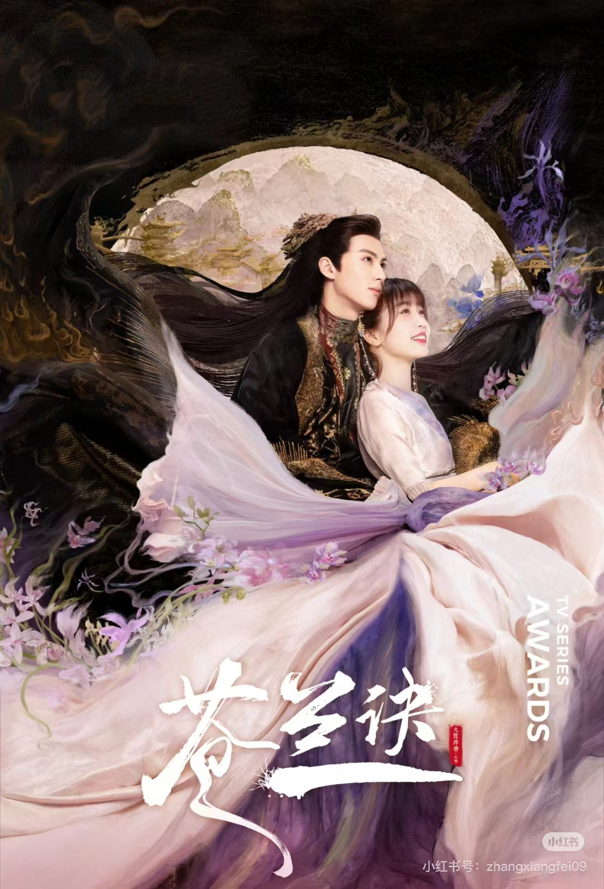

Hello everyone, I would like to share with you a favorite actress, her name is Esther, she is a very cute and quirky girl, I will briefly introduce her. 💗
Her name in Chinese is: Yu Shuxin. Her English name is: Esther. She is an actress and singer in Chinese mainland. I hope you can have a brief understanding of her through this web page. 💗
| TV series | The year | The name of the role |
|---|---|---|
| 2020 | tiansanqi | |
|  | 2022 | xiaolanhua |
|
2024 | lingmiaomiao |
As you can see from these two videos, she has a variety of styles, sometimes cute and sometimes cool, and she gives a sense of contrast and can easily navigate various genres. At work, she is an actor who takes her role seriously, and in life, she is a little girl who likes fashion, and her truth has gained many people who like her.
Her voice is also changeable, and can be cute or mature. She is a girl who loves to sing and dance, and she has brought a lot of joy to the audience through songs and dances. Maybe she doesn't sing the best, but she will also show herself very confidently and generously, which is what I like, and I hope to learn from her.
Click on this link Estherto get a lot of information about her.
The significance of having an idol is that it can bring us positive energy, stimulate our motivation and creativity, enhance social interaction and family relationships, bring us happiness and relaxation, and cultivate our aesthetic and cultural literacy. Therefore, chasing stars rationally, grasping the degree, and chasing stars is a good and meaningful thing. Do you have a favorite celebrity, idol or role model?